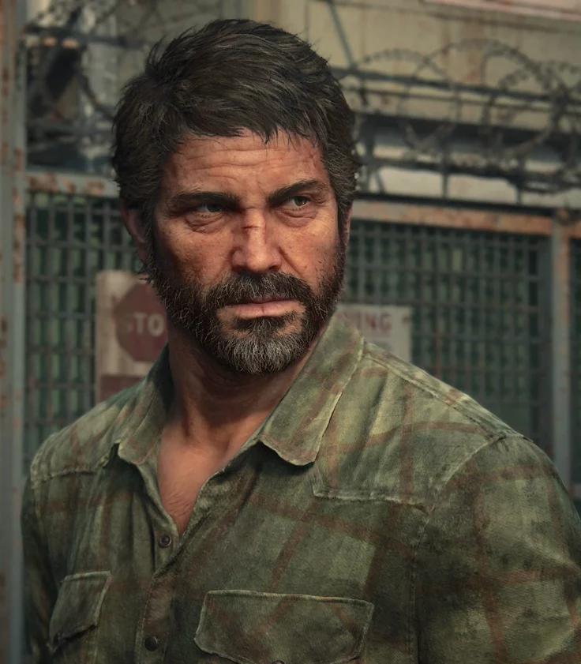
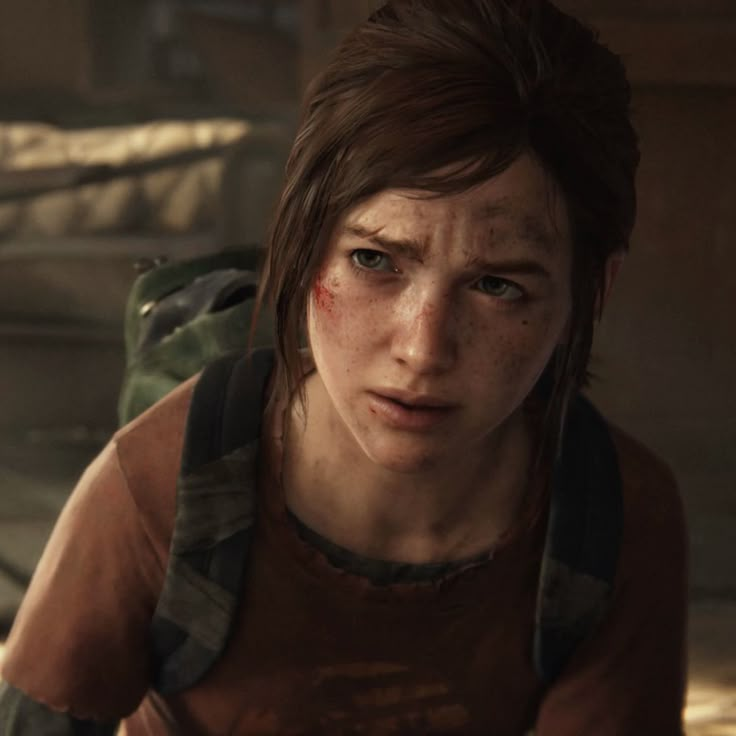
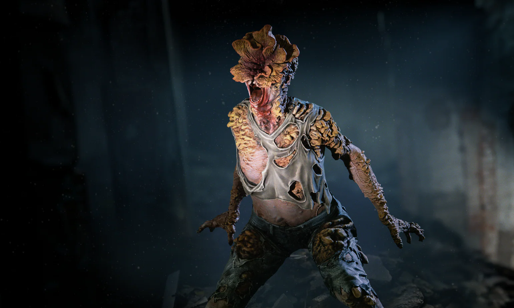
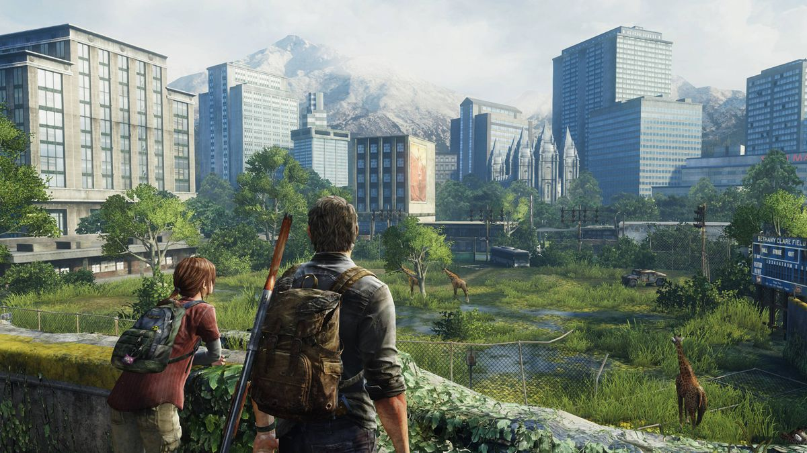

Galeria de Imagens
Confira algumas imagens marcantes de The Last of Us:




Sobre as imagens
- Joel: protagonista da história
- Ellie: personagem central da narrativa
- Clicker: um dos infectados mais perigosos
- Cenários: mostram o mundo pós-apocalíptico